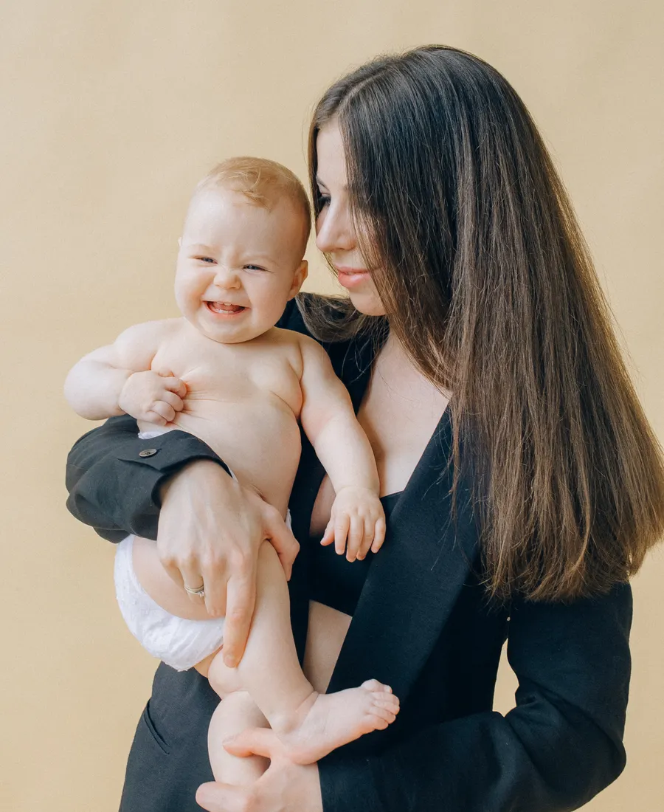
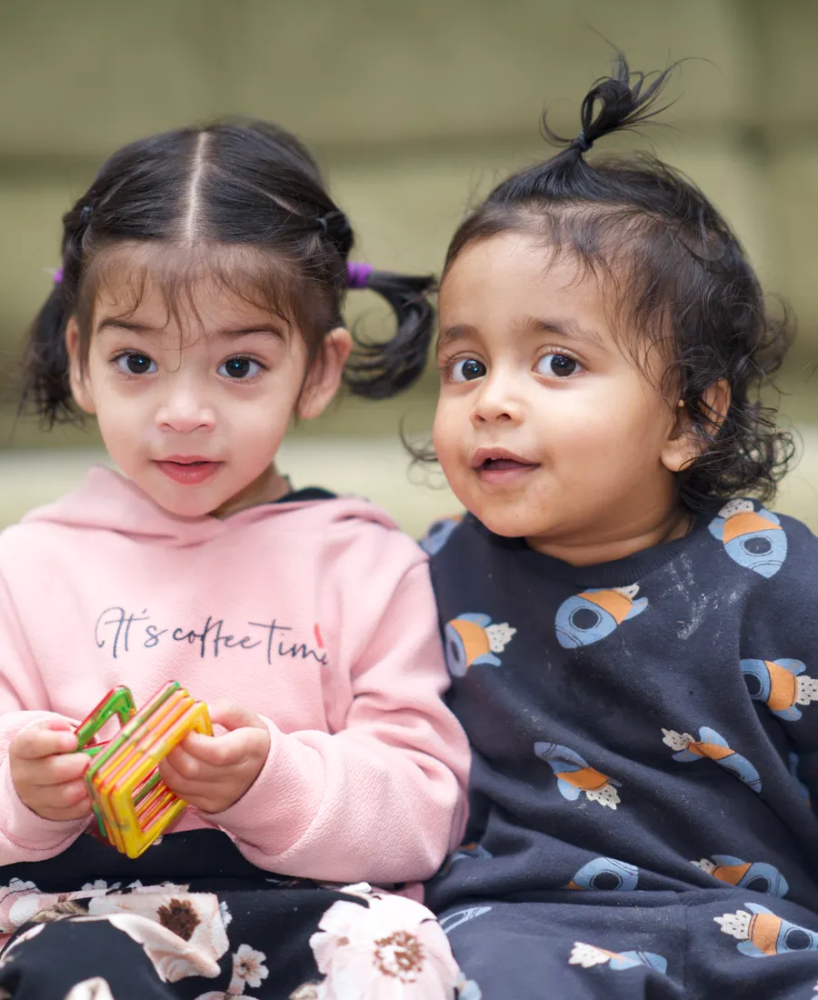

A little life, loved by many
Three years of being your home.
From the waiting days to tiny words, wobbly steps, birthday candles and the first day of school. Every little moment belongs.
For Mira, with all our love.Our first three years together



Maa, before the first hello
The hands that held you first.
Her first conversations with Mira began long before the world met her.
Papa, already your biggest fan
Your first home was in his arms.
One tiny hand, one very full heart, and a lifetime of silly faces ahead.
The waiting days
We loved you before we met you.
Little plans, quiet hopes, and a place already saved for you in every heart.
The very first day
And then, you were here.
One small face. A room full of people learning a brand-new kind of love.
Chapter one · 0 to 12 months
Your first year, all heart.
First smiles, first steps, first words, and a first birthday that brought everyone close.
Tap a photograph to turn it over. Reel cards open a short photo-slideshow sample.
Chapter two · 12 to 24 months
A little more of everything.
New words, big opinions, favorite games, and the first little rides around the garden.
Tap a photograph to turn it over. Reel cards open a short photo-slideshow sample.
Chapter three · 24 to 36 months
Look at you, little explorer.
More questions, more color, and a little backpack ready for the next big adventure.
Tap a photograph to turn it over. Reel cards open a short photo-slideshow sample.
 A note to keep
A note to keep
A note from Nani
“Keep asking your little questions, Mira. Our whole family will always make room for your wonder.”
Sample written note · No voice recording included
A family story can hold notes, photos and real recordings when its family adds them.
For every family, every first
Every little life deserves a story of its own.
This sample shows one way to keep the moments that make a family yours.
Back to Family Moments